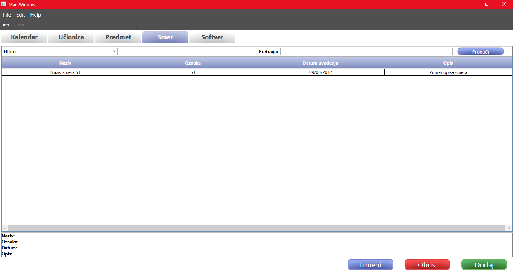

Tabelarni prikaz smerova
U ovom tabu se nalaze sve informacije u vezi sa smerovima. Tabela sadrži sve smerove koji se nalaze u sistemu
i u njoj su prikazane sledeće informacije o smeru:
- Naziv
- Oznaka
- Datum uvođenja
- Opis
Kada se klikne misem na jedan od smerova iz tabele, ispod tabele će se pojaviti detaljniji prikaz informacija odabranog
smera.

Dodavanje novog smera
Dodavanje novog smera se radi klikom na dugme Dodavanje ili prečicom na tastaturi Ctrl+M. Nakon
ove akcije otvara se novi prozor, koji je potrebno popuniti novim podacima.
Za detaljniju pomoć o prozoru za dodavanje novog smera, kliknite ovde.
Izmena smera
Izmena smera se radi tako što se najpre selektuje željeni smera u tabeli, a zatim se klikne na dugme Izmeni
ili prečicom Ctrl+I. Nakon ove akcije, otvara se prozor koji sadrži sve podatke smera koji je odabran za izmenu,
i u njemu korisnik može da unosi nove podatke.
Za detaljniju pomoć o prozoru za izmenu predmeta, kliknite ovde.
Takođe, moguća je izmena podataka više smerova odjednom. To se radi tako što se selektuje više redova u tabeli,
držanjem dugmeta Shift i strelice ka gore ili dole. Nakon što su svi željeni smerovi odabrani, klikom
Ctrl+I na tastaturi se otvara prozor za izmenu više podataka odjednom.
Detaljnije o tome možete pročitati ovde.
Brisanje smera
Brisanje smera se radi tako što se najpre selektuje jedan ili više smerova koje želite da obrišete. Brisanje
se pokreće klikom na dumge Obriši ili prečicom na tastaturi Ctr+Del. Zatim se pojavljuje prozor koji će
korisnika pitati da li je siguran da želi da obriše željene smerove. Ukoliko jeste, klikom na dugme DA,
brisanje se izvršava. Ako korisnik želi da odustane od brisanja, potrebno je da odabere mogućnost NE.
Pretraga smerova
Ukoliko ne postoji nijedna pojava ključne reči ("?naziv", "?oznaka", "?opis", "?=", "?!=", "?>", "?<", "?>=",
"?<=")
u pretrazi, onda se pretraga izvršava tako što se uneta vrednost traži u svim obeležjima jednog smera.
U suprotnom, radi se pretraga zasnovana na korišćenju upita. Dozvoljeno je postojanje jednog upita u polju za pretragu.
Ukoliko ih ima više, korisnik će biti obavešten o ograničenom broju istih.
Upit ima oblik _KLJUČNA_REC _OPERATOR _VREDNOST gde ključna rec može biti iz skupa ("?oznaka", "?naziv", "?opis"),
operand iz skupa (?!=, ?=), dok vrednost može biti bilo šta.
Relacije koje se unose na mestu operatora imaju svoje standarno značenje i primenjuju se na obeležje smera koje
je predstavljeno ključnom rečju sa poćetka upita.
Pregled ključnih reči koje se koriste za pretragu se prikazuju upotrebom Alt+Down ili Alt+Up prečica na tastaturi, koje omogućavaju otvaranje/zatvaranje odgovarajućeg combobox-a.
Ukoliko bilo koje od pravila bude narušeno, korisniku će se pojaviti adekvatno obaveštenje.
Prečica na tastaturi da bi se fokusirala pretraga je Ctrl+Shift+P.
Filter nad tabelom
Filer funkcioniše tako što je potrebno najpre odabrati kriterijum po kome se vrši filtriranje. Kriterijum po kome je
moguće izvršiti filtriranje na tabelom, su podaci predmeta po kolonama. Listu kriterijuma filtera je moguće automatski
otvoriti pomoću Alt+Up ili Alt+Down prečica na tastaturi. Nakon što korisnik odabere kriterijum,
potrebno je da u tekstualnom polju za unos, koje se nalazi pored, unese tekst koji želi da pretražuje u tabeli, osim ako
je odabrao datum uvođenja. U tom slučaju se pojavljuju dva polja i potrebno je odabrati opseg datuma koji se pretražuje.
Prečica na tastaturi da bi se fokusirao filter je Ctrl+Shift+F.

Link do početnog prozora za pomoć: Početna stranica